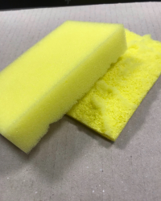
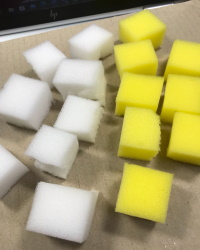
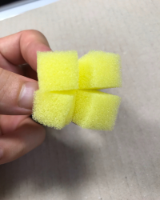
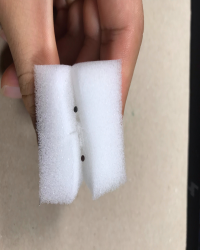
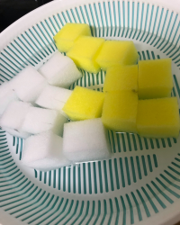

最初は苗から育てようと思ったが市販のものはほとんどが土壌栽培であり、根が土壌栽培用に成長していいるので、いきなり水耕栽培に変えると成長しないらしい。なので種から育てる必要がある。
今回は比較的成長の早いサンチュと小松菜を選んだ。
スポンジの固い部分を切り取り、細かく切り分ける
 細かく切ったスポンジに十字に切り込みを入れる
そこに種を植えていく
スポンジ内の空気を抜いてから、1/3程度浸るまで水につかす
液体肥料は発芽前ではいらないという記事といるという記事があるので、発芽が見られないようなら使うことにした。